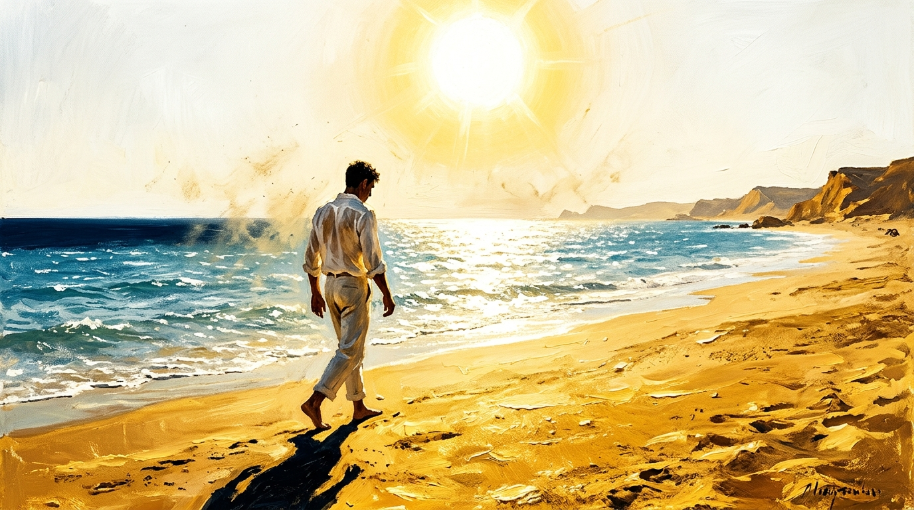
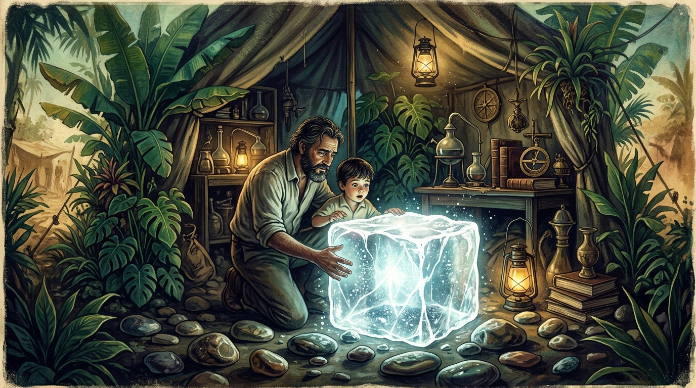
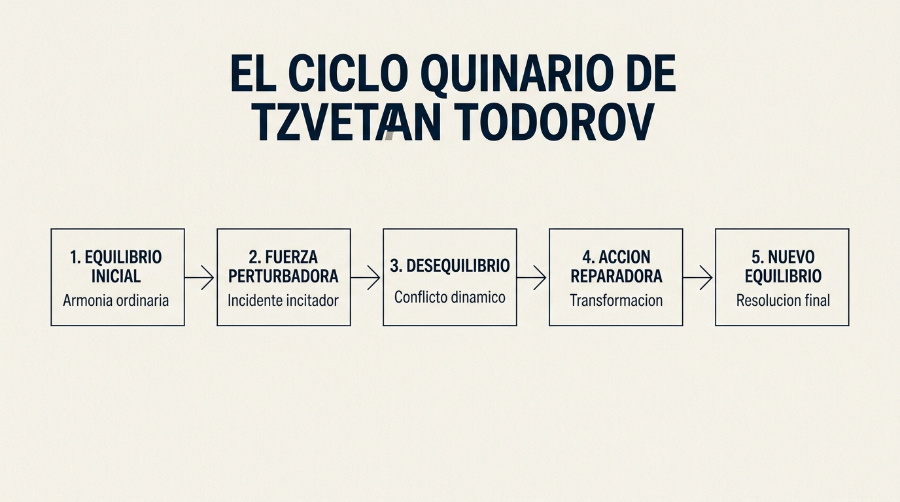
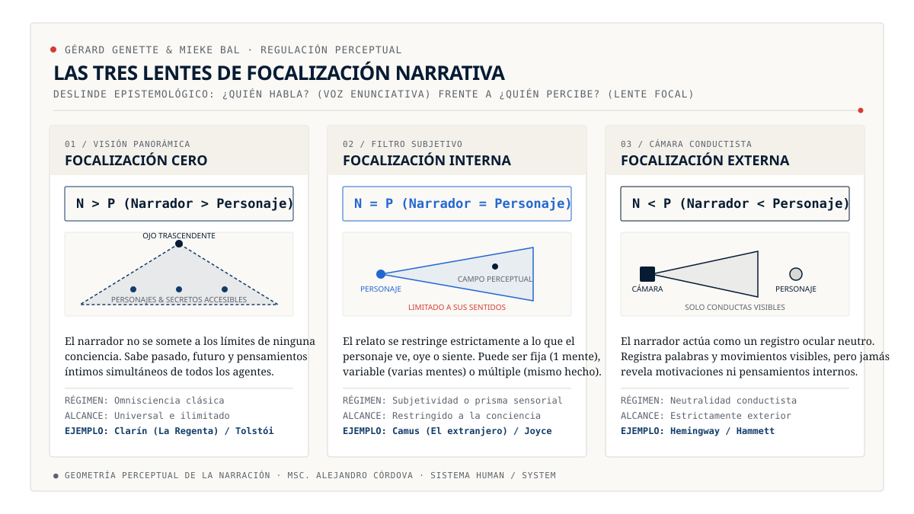
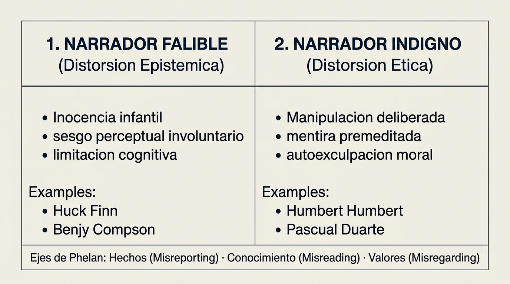
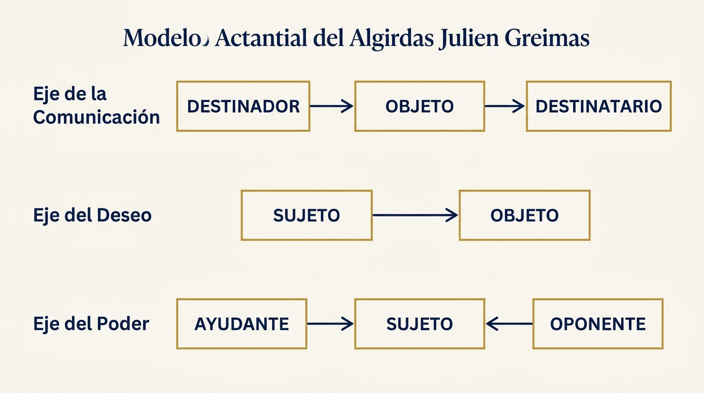
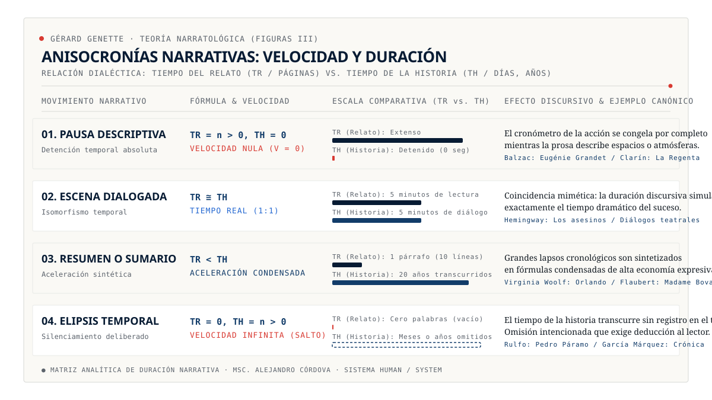
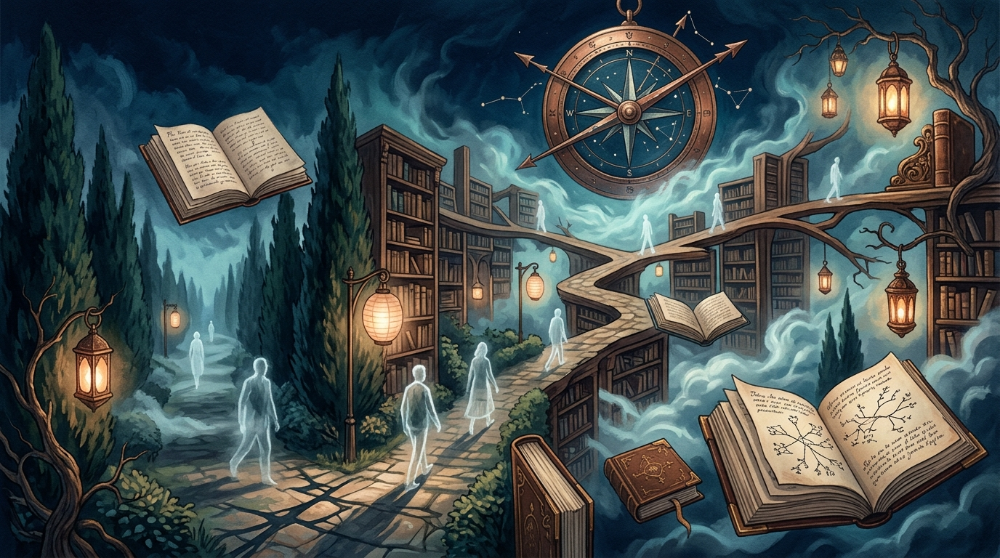
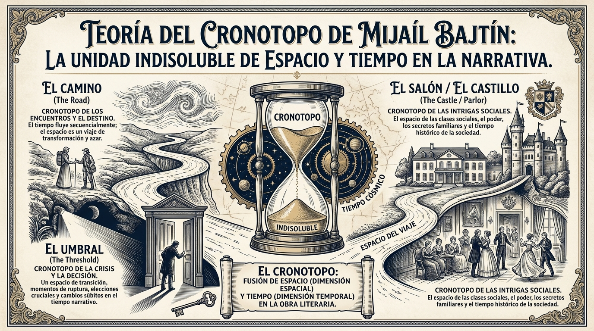
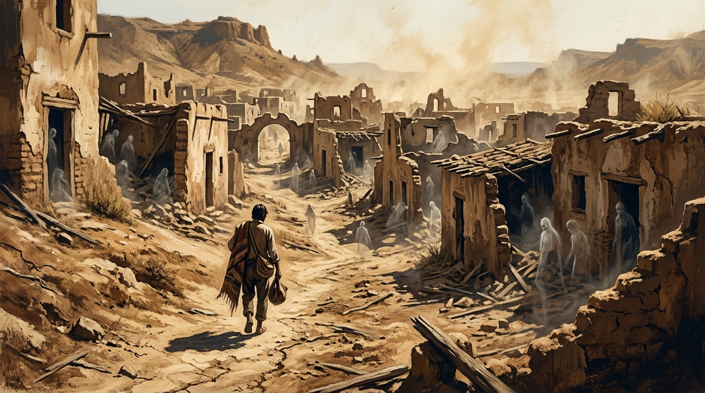

Tratado integral de morfología narrativa, teoría narratológica y modelos posclásicos.
Desde los elementos basales del relato hasta las fronteras epistemológicas de la ficción contemporánea.
RECURSO PEDAGÓGICO UNIVERSITARIO & PREUNIVERSITARIO·Bachillerato Internacional & Filología
Módulo 01 · Ruta Fundamental
La Voz del Narrador y la Enunciación
Toda historia es un artificio verbal. El primer deslinde epistemológico de la literatura consiste en distinguir
al autor de carne y hueso (entidad histórica y civil) de la voz narrativa (ente de ficción creado para orquestar las palabras).
Figura 1.1: Clasificación de narradores según su persona gramatical y grado de conocimiento.[ EXPANDIR DIAGRAMA ↗ ]
1.ª Persona: Protagonista
El narrador
cuenta su propia peripecia existencial. Es el centro gravitacional del relato: su campo de visión está limitado por sus emociones, recuerdos y prejuicios sensoriales.
1.ª Persona: Testigo
El narrador
forma parte de la historia pero desde los márgenes. No es el protagonista heroico: actúa como un cronista u observador presencial privilegiado.
3.ª Persona: Omnisciente
Bajo régimen de ,
la voz demiúrgica se sitúa como :
conoce los secretos íntimos de todos los personajes, su pasado y su destino.
3.ª Persona: Observador
Bajo régimen de ,
el narrador actúa a modo de cámara cinematográfica: solo registra ademanes, sonidos y desplazamientos físicos observables.
01 / LABORATORIO INTERACTIVO · INTERRUPTOR DE VOCES
El Interruptor de Voces
Comprueba cómo un mismo incidente (el forcejeo por un reloj de oro en un mercado de antigüedades) muta radicalmente
según los límites cognoscitivos de la voz elegida:
Módulo 02 · Ruta Fundamental
Anatomía de los Personajes: Roles, Arquetipos y Psicología
Los personajes son agentes dotados de motivación y deseo. No son personas reales, sino construcciones discursivas
que dinamizan las fuerzas del conflicto y vehiculan los valores de la obra.
Figura 2.1: Jerarquías, arquetipos y tipología funcional de los personajes en la trama.[ EXPANDIR DIAGRAMA ↗ ]
El Protagonista
Sujeto nuclear de la acción dramática. Encarna el deseo motriz (el objeto de valor) y es quien sufre
la transformación moral más honda a lo largo del arco narrativo.
El Antagonista
Fuerza de oposición que bloquea el objetivo del protagonista. No es necesariamente un 'villano' ético;
puede ser un rival legítimo, un sistema social opresivo o una pulsión autodestructiva interna.
Personajes Redondos vs. Planos
Según E. M. Forster (Aspects of the Novel): los personajes planos se construyen en torno a una sola idea o rasgo invariable; los redondos poseen contradicciones psicológicas y capacidad de sorprender de modo convincente.
La Red de Actantes
En la semiótica moderna, los personajes se analizan como funciones operativas en el
:
aliados, oponentes y destinadores que dinamizan la acción.
Módulo 03 · Ruta Fundamental
El Espacio y la Atmósfera Narrativa
El espacio literario no es un mero telón de fondo decorativo: es un actuante silencioso que condiciona las posibilidades de vida, la psicología y el destino de los personajes dentro de la .
Figura 3.1: Matriz tridimensional del espacio narrativo: topografía, atmósfera emotiva y marco sociocultural.[ EXPANDIR DIAGRAMA ↗ ]
1. Espacio Físico / Geográfico
Coordenadas tangibles, topográficas y climáticas. La geografía material: el desierto calcinado, la niebla londinense, las ciénagas impenetrables o las callejuelas laberínticas.
2. Espacio Psicológico / Atmósfera
Clima anímico y afectivo que impregna el relato: opresión claustrofóbica, desolación espectral, euforia romántica o zozobra existencial que resuena con el estado mental de los actuantes.
3. Espacio Sociocultural
Estratificación socioeconómica, códigos de clase, mandatos morales y normas no escritas que restringen o posibilitan la libertad de los protagonistas.

Camus: La reverberación solar en la playa de Argel como detonante fisiológico del absurdo.[ EXPANDIR DIAGRAMA ↗ ]

García Márquez: Macondo como mítico donde conviven piedras prehistóricas y peste del olvido.[ EXPANDIR DIAGRAMA ↗ ]
Módulo 04 · Ruta Fundamental
El Tiempo y la Cronología: El Relato frente al Reloj
El tiempo físico fluye en una sola dirección; el tiempo del relato, en cambio, se pliega, salta y se dilata al capricho de la arquitectura discursiva.
Figura 4.1: Movimientos del tiempo narrativo: sucesión lineal, saltos temporales y condensación elíptica.[ EXPANDIR DIAGRAMA ↗ ]
Tiempo Lineal vs. Anacrónico
El tiempo lineal sigue la secuencia sucesiva de causa y efecto. Sin embargo, los relatos modernos introducen
para quebrar la monotonía y orquestar el suspenso.
Salto al Pasado: Flashback
Técnicamente denominado :
el flujo narrativo retrocede para desenterrar secretos del pasado que iluminan el conflicto presente.
Salto al Futuro: Flashforward
Técnicamente denominado :
anticipación discursiva de acontecimientos futuros que crea horizontes de fatalidad o expectación trágica.
Fábula frente al Artificio
Esta tensión funda la distinción clásica entre
:
el orden de los hechos en la realidad frente a su distribución artística en el texto.
Módulo 05 · Ruta Fundamental
El Conflicto y el Ciclo Quinario de Todorov
Sin fricción ni obstáculo no hay relato posible. El teórico búlgaro Tzvetan Todorov demostró que la trama dramática
supera el esquema escolar tripartito mediante una trayectoria dialéctica en cinco estados concatenados.

Figura 5.1: Esquema morfológico del y la curva de tensión dramática.[ EXPANDIR DIAGRAMA ↗ ]
05 / SIMULADOR GRÁFICO · CURVA DE TENSIÓN DRAMÁTICA
Curva de Tensión Interactiva
Haz clic en cada nodo numerado (del 1 al 5) sobre la curva dramática para inspeccionar la justificación estructural de cada etapa:
1
2
3
4
5
Módulo 06 · Ruta Avanzada
Voz, Diégesis y Niveles Narrativos (Gérard Genette)
Gérard Genette (Figures III, 1972) desarticuló la ingenua clasificación escolar de 'primera y tercera persona'.
Toda narración presupone un sujeto enunciador cuya relación con la define su régimen ontológico y su nivel de relato.
El narrador está completamente ausente del universo de la historia. Relata los hechos desde fuera de la diégesis sin intervenir jamás en calidad de personaje (ej. Cien años de soledad).
El narrador participa materialmente en el universo diegético que evoca, actuando como personaje secundario, observador o testigo presencial (Nick Carraway en El gran Gatsby).
Modalidad intensificada donde el narrador relata su propia trayectoria protagónica. Coinciden el sujeto de la enunciación y el del enunciado (Lazarillo de Tormes, El extranjero).
Transgresión audaz y paradójica de la frontera que separa distintos niveles diegéticos: el lector o autor irrumpe en la trama ficcional, o el personaje salta a la realidad del lector (Cortázar, Continuidad de los parques).
Nivel Extradiegético
Nivel primario exterior al universo de los personajes; el acto de enunciación marco que funda la lectura.
Nivel Intradiegético
El plano de los acontecimientos y personajes que habitan el relato primario (la diégesis de base).
Nivel Metadiegético
El relato dentro del relato (cajas chinas o historias enmarcadas, como los cuentos de Sherezade en Las mil y una noches).
Módulo 07 · Ruta Avanzada
La Lente Perceptual: Voz frente a Focalización (Genette vs. Bal)
Uno de los mayores hitos de la narratología moderna consiste en deslindar dos preguntas que antes se confundían:
¿Quién habla? (instancia de la Voz) frente a ¿Quién percibe / siente? (instancia de la Focalización o perspectiva).

Figura 7.1: Regulación óptica de la información según las ecuaciones epistémicas de Gérard Genette y Mieke Bal.[ EXPANDIR DIAGRAMA ↗ ]
El narrador sabe y percibe más de lo que cualquier personaje puede conocer. Es la omnisciencia tradicional decimonónica (Clarín en La Regenta).
El relato se tamiza estrictamente por la conciencia sensorial de un personaje reflector. Puede ser fija (un personaje), variable (alternada) o múltiple (Rashomon).
El narrador transmite menos información que la que poseen los personajes. Registro neutral conductista sin acceso a mentes (Hemingway, Robbe-Grillet).
07 / SIMULADOR ÓPTICO · LENTES DE FOCALIZACIÓN
Simulador de Lentes Perceptuales
Inspecciona cómo se transforma la misma escena canónica (el carruaje cerrado de Madame Bovary) al mirar a través de las tres ópticas genettianas:
Módulo 08 · Ruta Avanzada
La Teoría del Narrador Inconfiable (Greta Olson & James Phelan)
No todas las voces en primera persona dicen la verdad. La narratología contemporánea ha desmantelado el concepto genérico
de unreliable narrator distinguiendo entre la limitación cognitiva involuntaria y la manipulación retórica dolosa.

Figura 8.1: Matriz diagnóstica de inconfiabilidad narrativa: narrador falible vs. indigno y los tres ejes de Phelan.[ EXPANDIR DIAGRAMA ↗ ]
Desvío involuntario producto de inmadurez infantil, trauma o limitaciones intelectuales. No busca engañar al lector (Huck Finn, Benjy Compson).
Manipulación deliberada, autoexculpación o falsedad calculada contra el juicio moral del lector (Humbert Humbert en Lolita; Pascual Duarte).
Los 3 Ejes de James Phelan
1) Eje de los hechos: mentira (misreporting) u ocultamiento (underreporting).
2) Eje del conocimiento: error de lectura (misreading) o limitación ingenua (underreading).
3) Eje de los valores: corrupción ética (misregarding) o superficialidad (underregarding).
08 / LABORATORIO FORENSE · DIAGNÓSTICO DE INCONFIABILIDAD
Diagnóstico de Inconfiabilidad en Obras Canónicas
Selecciona un caso literario canónico para desentrañar los ejes retóricos y ontológicos de su inconfiabilidad:
Módulo 09 · Ruta Avanzada
Construcción del Personaje & Matriz Actancial de Greimas
Algirdas Julien Greimas (Sémantique structurale, 1966) superó la psicología atomizada del personaje concibiendo el relato como una gramática de la acción: los actuantes adquieren sentido únicamente por su posición vectorial en el .

Figura 9.1: Los tres ejes semióticos de Greimas: Deseo (Sujeto-Objeto), Comunicación (Destinador-Destinatario) y Poder (Ayudante-Oponente).[ EXPANDIR DIAGRAMA ↗ ]
Eje del Deseo
Sujeto ↔ Objeto: El núcleo motor de la intriga. El sujeto es definido por la búsqueda o la carencia del objeto de valor.
Eje de la Comunicación
Destinador → Destinatario: La instancia que motiva o sanciona el deseo (la ley, los ancestros, la patria) y quien recibe el beneficio.
Eje del Conflicto / Poder
Ayudante ↔ Oponente: Las fuerzas coadyuvantes que facilitan la actualización del deseo frente a los obstáculos que lo combaten.
09 / TABLERO SEMIÓTICO · MODELO ACTANCIAL DE GREIMAS
Tablero Actancial Interactivo
Selecciona un relato canónico para distribuir sus entidades dramáticas en la matriz de los seis actantes:
Destinador (Emisor)
Objeto (Deseo)
Destinatario (Receptor)
Ayudante (Auxiliar)
Sujeto (Héroe/Agente)
Oponente (Obstáculo)
Módulo 10 · Ruta Avanzada
El Tiempo del Relato: Fábula vs. Sjuzet, Anisocronías y Frecuencia
Los formalistas rusos escindieron el devenir objetivo ().
Gérard Genette formalizó el compás discursivo a través del velocímetro de las
y la .

Figura 10.1: Modulación de la velocidad temporal del relato en relación con el tiempo de la historia (TR/TH).[ EXPANDIR DIAGRAMA ↗ ]
10 / MODULADOR DE COMPÁS · ANISOCRONÍAS NARRATIVAS
El Velocímetro Narrativo de Genette
Cambia la marcha del acelerador narrativo para experimentar cómo varía la relación entre tiempo del relato (TR) y tiempo de la historia (TH):

Borges: La disolución laberíntica de la cronología en una pura donde conviven todos los tiempos.[ EXPANDIR DIAGRAMA ↗ ]Módulo 11 · Ruta Avanzada
Cronotopo, Representación de la Conciencia y Narratología Antinatural
Las fronteras de la narratología posclásica exploran cómo el espacio y el tiempo se funden en el de Mijaíl Bajtín, los dispositivos de acceso a la mente de Dorrit Cohn y la (Jan Alber).

Figura 11.1: El cronotopo bajtiniano: encarnación del tiempo histórico en la carne topográfica de la novela.[ EXPANDIR DIAGRAMA ↗ ]
11 / LABORATORIO DE LA CONCIENCIA · MODOS DE COHN
Los Tres Modos de Conciencia de Dorrit Cohn
Compara cómo muta la intimidad mental de un personaje reflector (Emma Bovary) a través de las tres técnicas formalizadas en Transparent Minds (1978):

Rulfo: La narratología antinatural de Comala: ánimas en pena que conversan bajo los terrones de tierra.[ EXPANDIR DIAGRAMA ↗ ]Módulo 12 · Gran Reto Final
Gran Reto Narratológico: Análisis Textual & Evaluación Formativa
Demuestra tu dominio riguroso desentrañando diez casos canónicos de la literatura universal (García Márquez, Rulfo, Borges, Camus, Flaubert, Woolf, Cela, Poe, Dickens, Fuentes).
Cada pregunta evalúa un desafío narratológico concreto con retroalimentación filológica inmediata y certificación sobre diez puntos.
E
Perfil Activo:Estudiante Anónimo· Curso:General
Evaluación Formativa de Narratología Superior
Se te presentarán diez extractos de obras cumbres de las letras universales. Tu misión filológica consiste en
identificar el régimen perceptual, la modulación temporal, la arquitectura actancial o la naturaleza de la inconfiabilidad.